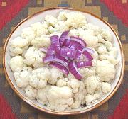

|
Cauliflower SaladBolivia - Ensalada de Coliflor | ||||
| Serves: Effort: Sched: DoAhead: |
6 salad ** 2+ hrs Best |
Bolivia is a mountainous land of radically different sub-climates, some of which are suitable for growing cauliflower, which is not much grown in most of South America. | |||
|
2-1/2 ------- 2 1-1/2 1-1/2 3/4 ----- |
# --- T t t t --- |
Cauliflower (1) -- Dressing Olive Oil, ExtV Wine Vinegar, white Salt Pepper ------------ |
This salad is often served with roasted meats. A large Red Onion diced and tumbled in makes an excellent addition. Make - (30 min - 10 min work)
|